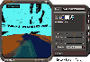

创新，这个音频界当之无愧的老大哥，在推出EAX(环境音效扩展集)后又继续依靠自身强大的技术实力，不断推出与EAX配套的系列软件Live！Ware，进一步升级和完善着环境音效，使EAX在游戏、多媒体互动、高保真PC等领域的应用进一步扩大。为了让大家更好地使用Live！Ware，让我们来看一看创新前不久才发布的一款新软件LAVA！（Live！ Audio－visual Animation，live！音乐虚拟动画，已经包含在Live！Ware3.0中）。
LAVA！是一个有点类似Winamp插件的软件，它会在你播放MP3、CD
Audio时给你演示极其动感的三维动画，而且三维物体会智能地随着音调、节奏而跳动。更吸引人的是，用户可以轻松地自定义三维物体的图案纹理。在听音乐的同时欣赏配合音乐的三维动画，无疑会大大加强音乐的感染力。使用LAVA！至少要有Live！Ware
2.0、Media Player6.0以及PII 233、32M内存和一块较好的3D卡。
启动LAVA！后，按“Personalize”弹出菜单，并点击“Advance”打开全部设置菜单。在“Scene”项中可选择八种不同的预置动画场景，点击不同的纹理图案，就可以自已选择图片作为动画中相应的三维物体的纹理图案，点击图案纹理右边的颜色框可调节图案的颜色；你还可以保存自定义的场景并与MP3歌曲建立关联，譬如你播放Michael Jackson的MP3，你可用Michael的一些酷照作为纹理图案自定义场景，并选“Save and Associate with MP3”，然后再选定相关联的MP3，这样LAVA！会自动新建一个与此MP3相关联的自定义场景（与MP3同名的.mv3文件），以后你再用Playcenter播放此MP3时就会自动演示你自定义的动画场景。 试想一边听着Michael的歌，一边看Michael的动画，真是不错!在“Scene”里你还可调节一些动画细节：“Complexity（图形复杂程度）”、“Brightness（亮度）”、“Frame Rate（帧率）”、“Presponse（动画演示速度）”。通过下面的“Message”栏，还可以输出一些三维汉字和英文，并可调节其颜色、字体和大小。
在“Effect”项中则可以选择一些3D效果：“Wire Frame（只展现框架）”、“Dynamic Coloring（动态颜色）”、“Texture（纹理）”、“Strobe（闪烁）”、“Colored Light（彩色灯光）”、“Pause Camera（固定视角）”，也可以在图像演示区中，直接按左键拖动来改变视角和物体运动。在“Scene Specific Effects”下可改变不同场景的一些特殊效果，如不同的3D图形、运动方向等，用户可根据自已喜好进行设置；在“Audio”项中选择当前3D动画演示所根据的音源。
自创新公司推出EAX1.0到现在的3.0，环境音效的音质、音效、3D定位等等不断提高完善。由于EAX在多媒体互动软件、游戏中的优秀表现，越来越多的软件特别是游戏开始支持EAX，越来越多的用户开始选择Live！/Value，而LAVA！能让你的Live！/Value表现更出色！最后，让我像StarWars里那样向大家说一句：“May The EAX Be With You！”
（四川 LoveGrace工作室） |